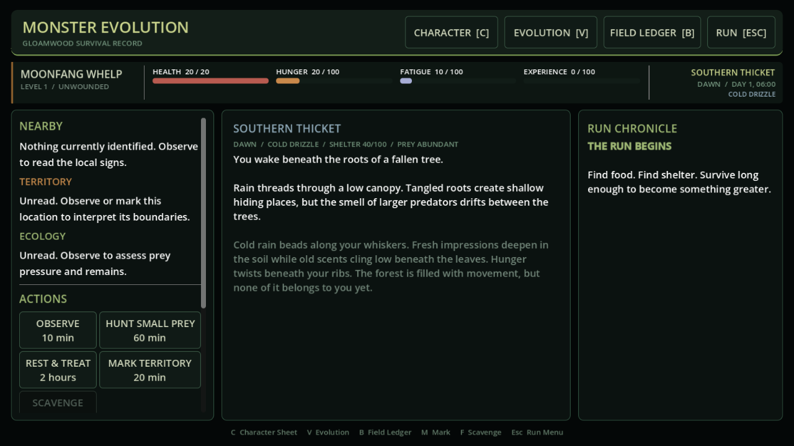
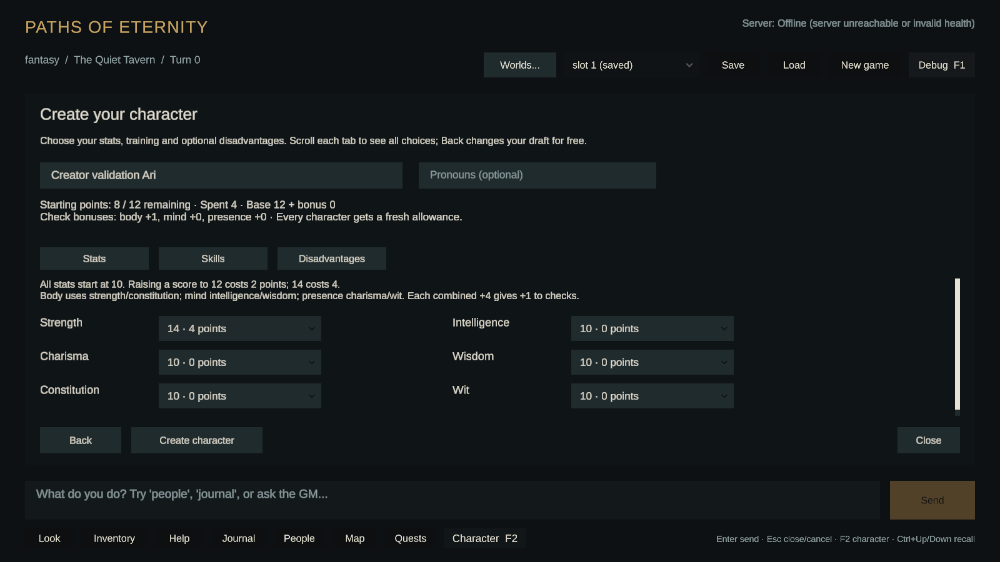
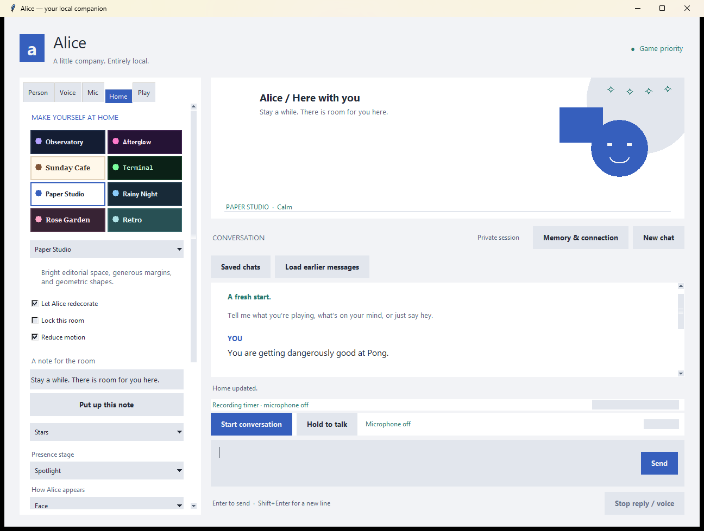
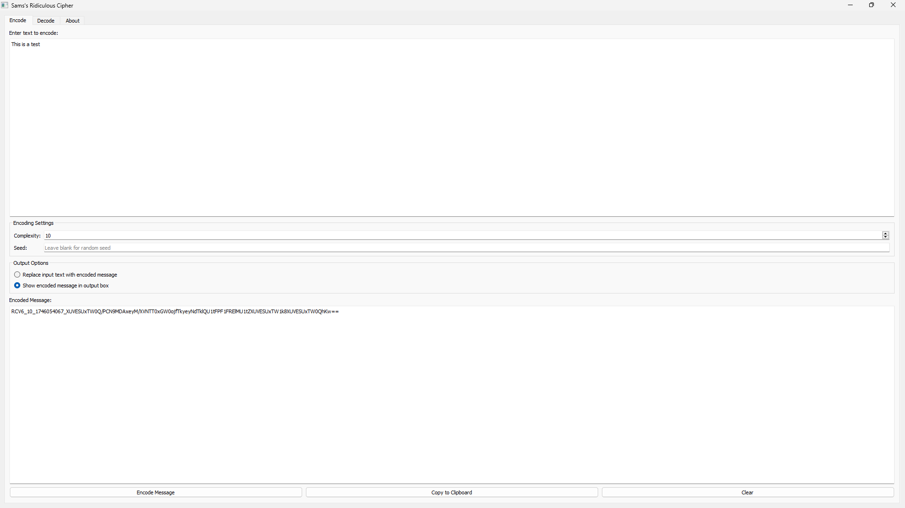

The Black Ledger
A dark fantasy world where choices have visible costs and people remember what you do.
Ink / JavaScript / HTML & CSSCase study ↗
THE PROJECT INDEX
Games, simulations and creative tools. Explore what each project does, how it works and where it stands.
5 projects
A dark fantasy world where choices have visible costs and people remember what you do.

Survive as part of an ecosystem, then evolve through the pressures of the world around you.

Open-ended storytelling with a game engine that keeps the rules and the record.

A local desktop companion that brings chat, voice and personality into one interface.

An intentionally elaborate cipher tool for increasingly strange tabletop journal entries.